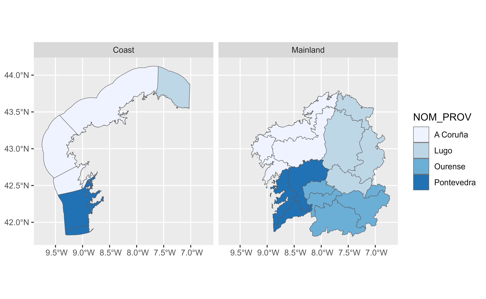

Get AEMET alert zones.
Source
https://www.aemet.es/es/eltiempo/prediccion/avisos/ayuda. See also Annex 2 and Annex 3 docs, linked in that page.
Details
The first result of the call on each session is (temporarily) cached in
the assigned tempdir() for avoiding unneeded API calls.
Examples
library(tibble)
alert_zones <- aemet_alert_zones()
alert_zones
#> # A tibble: 233 × 6
#> COD_Z NOM_Z COD_PROV NOM_PROV COD_CCAA NOM_CCAA
#> <chr> <chr> <chr> <chr> <chr> <chr>
#> 1 610401 Valle del Almanzora y Los Vélez 6104 Almería 61 Andalucía
#> 2 610402 Nacimiento y Campo de Tabernas 6104 Almería 61 Andalucía
#> 3 610403 Poniente y Almería Capital 6104 Almería 61 Andalucía
#> 4 610404 Levante almeriense 6104 Almería 61 Andalucía
#> 5 611101 Grazalema 6111 Cádiz 61 Andalucía
#> 6 611102 Campiña gaditana 6111 Cádiz 61 Andalucía
#> 7 611103 Litoral gaditano 6111 Cádiz 61 Andalucía
#> 8 611104 Estrecho 6111 Cádiz 61 Andalucía
#> 9 611401 Sierra y Pedroches 6114 Córdoba 61 Andalucía
#> 10 611402 Campiña cordobesa 6114 Córdoba 61 Andalucía
#> # ℹ 223 more rows
# Cached during this R session
alert_zones2 <- aemet_alert_zones(verbose = TRUE)
#> ℹ Loading alert zones from temporal cached file saved at 2026-02-18 14:54:00 UTC
identical(alert_zones, alert_zones2)
#> [1] TRUE
# Select an map beaches
library(dplyr)
#>
#> Attaching package: ‘dplyr’
#> The following objects are masked from ‘package:stats’:
#>
#> filter, lag
#> The following objects are masked from ‘package:base’:
#>
#> intersect, setdiff, setequal, union
library(ggplot2)
# Galicia
alert_zones_sf <- aemet_alert_zones(return_sf = TRUE) |>
filter(COD_CCAA == "71")
# Coast zones are identified by a "C" in COD_Z
alert_zones_sf$type <- ifelse(grepl("C$", alert_zones_sf$COD_Z),
"Coast", "Mainland"
)
ggplot(alert_zones_sf) +
geom_sf(aes(fill = NOM_PROV)) +
facet_wrap(~type) +
scale_fill_brewer(palette = "Blues")
